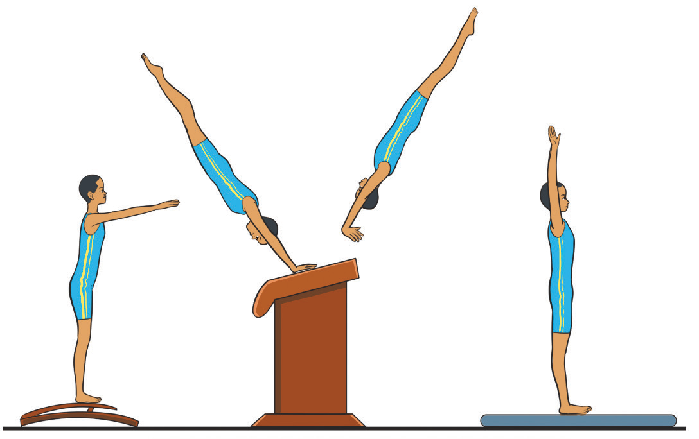

- (ii) Jump onto the springboard using both feet keeping your shoulders open, yet, the body remains tight;
- (iii) Extend the body toward the vault and stay aligned as your hands reach the vault table.
- (iv) Press your hands explosively against the table driving your shoulders upward to create a lift;
- (v) Move your body into a straight or slightly arched shape as you vault;
- (vi) Land with feet together, absorbing the impact with bent knees and straightening your body, Figure 4.41; and
- (vii) Repeat it to perfect the skill.

a b c dActivity 4.35
Use the internet and other available resources to learn how to perform handspring on vault. Look for step-by-step guides, instructional videos, and safety tips. Then practice it.
Back handspring
A back handspring is a fundamental gymnastics skill whereby a gymnast jumps backward, flips onto their hands, and pushes off to land on their feet. It is commonly